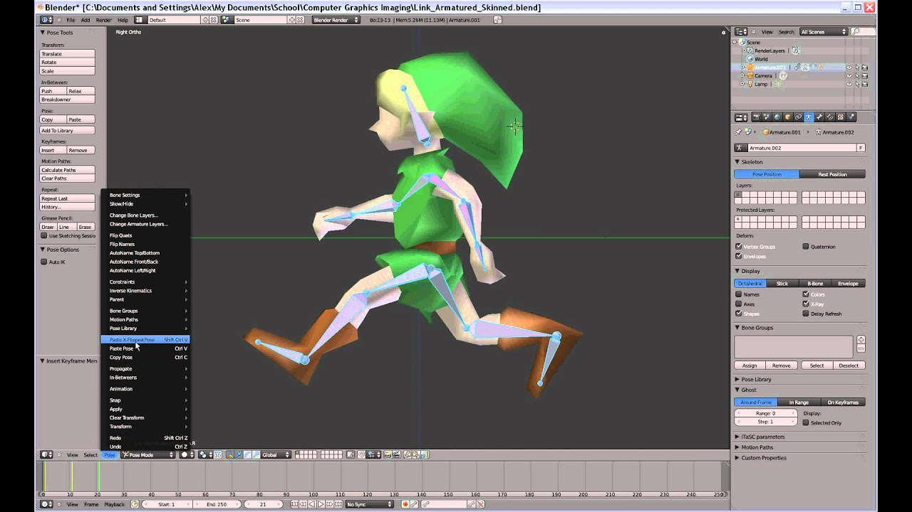

День 5 — Анимация: основы, объекты и персонаж
На этом этапе ты начинаешь анимировать: работаешь с ключевыми кадрами, создаешь движение объектов и пробуешь базовую анимацию персонажа.
Видеоурок
▶

Что такое анимация
Анимация — это изменение параметров объекта во времени. В Blender это делается через ключевые кадры (keyframes).
Ты задаешь состояние объекта (позицию, вращение, масштаб) в разных кадрах, а Blender автоматически создает движение между ними.
Timeline (временная шкала)
- находится внизу интерфейса
- Start Frame — начало анимации
- End Frame — конец анимации
- пример: 0–120 кадров
Keyframes (ключевые кадры)
Ключевой кадр — это сохраненное состояние объекта.
Добавление keyframe
- Выдели объект
- Нажми I
- Выбери Location / Rotation / Scale / LocRotScale
Пример
- Кадр 1 → позиция → I → Location
- Кадр 60 → перемещение объекта
- снова I → Location
В результате объект начинает двигаться.
Анимация простого объекта
Движение куба
- Кадр 1 → начальная позиция → I → Location
- Кадр 60 → перемести куб
- I → Location
Добавление вращения
- в другом кадре нажми R
- затем I → Rotation
Базовые принципы анимации
Тайминг
- мало кадров → быстрое движение
- много кадров → медленное движение
Поза
- каждое движение состоит из поз
- позы должны быть читаемыми
Плавность
- резкие движения выглядят неестественно
- лучше использовать постепенные переходы
Анимация персонажа
Важно: ты анимируешь не меш, а кости (арматуру).

Подготовка
- выдели арматуру
- перейди в Pose Mode
Начальная поза
- Кадр 1 — нейтральная поза
- A → I → LocRot
Движение вперед
- Кадр 60 — перемести персонажа вперед
- I → Location
Упрощенные движения
Ходьба
- чередование ног
- перенос веса
- легкое движение корпуса
Бег
- быстрее ходьбы
- больше амплитуда
- есть момент “в воздухе”
Прыжок
- присед
- отталкивание
- полет
- приземление
Проверка анимации
- нажми Play или Space
- проверь движение персонажа
- при необходимости скорректируй ключи
Что важно запомнить
- анимация строится на keyframes
- движение — это последовательность поз
- сначала простое, потом сложное
- идеал не нужен — нужен результат
Задание
- Сделай перемещение персонажа
- Добавь ходьбу
- Добавь бег
- Добавь прыжок
- (по желанию) добавь любое действие
Итог дня
- есть первая анимация персонажа
- есть понимание keyframes
- персонаж двигается в сцене
- есть базовый контроль анимации